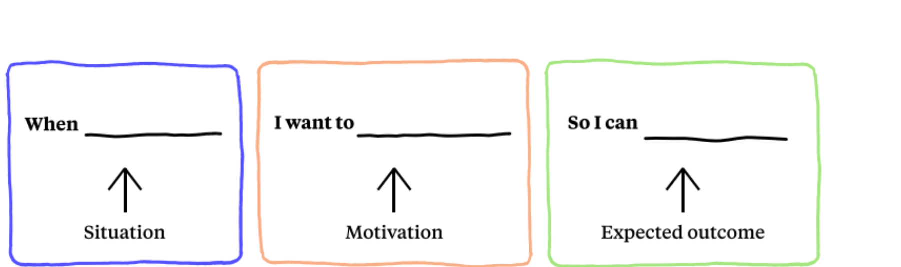

Salesforce
UX Research Intern, Summer 2020
www.salesforce.com
Overview
I recently was a UX Research intern on the Cross-Cloud Research & Insights team researching Content Experience. Specifically, I focused on how small-mid business Salesforce Administrators engage, perceive, and interact with Salesforce support email communications when on the lowest level of support. I handled this 12 week research study from start to finish, and here's a high-level overview — this project is largely under NDA, so please reach out for more information!
Methods, Tools
Stakeholder Interviews, User Interviews, Surveys, Jobs to be Done, Heuristic Evaluation, Literature Review, Journey Mapping, SurveyMonkey, Miro, Webex (for interviews)
Problem Statement
"What even is a Salesforce Administrator?" (alas, you may be wondering).
A Salesforce Administrator, in a very high-level answer, essentially manages the Salesforce platform for a business or organization, customizing the platform so they can get the most out of Salesforce. Previous research done leading up to this project showed that a large amount of these Salesforce Administrators had the lowest level of Salesforce support — and from this segmentation of users, many were from small-mid sized businesses/organizations, had minimal background in Salesforce, and more.
When there's a change, update, release, etc. in the Salesforce platform, product service emails are sent out to Salesforce Administrators informing them of any action to take or changes taking place. Often, these are lengthy and technical emails, ranging in severity and in action/inaction for the reader. These emails are essential for Administrators to stay up to date and successfully use the platform for their organization and end-users.
So the burning question is — how effective and understandable are Salesforce emails communications for these Salesforce Administrators on the lowest level of support?
Process
Exploring Existing Insights
Defining Effective Communications

Talking to Salesforce Administrators
Qualitative 1-1 User Interviews with various Salesforce Administrators along with a Heuristic Evaluation activity evaluating existing email samples in session.

Learnings
While I was at Salesforce, I actually kept a Quip doc of learnings I had throughout the internship — every time something stood out or was meaningful, I jotted it down. Here's a few things I had written down at the time and while looking back.
- Embracing ambiguity, and thus, being flexible, is important in research. This project was ambiguous from the start, and having an open mind (instead of being stubborn about going down one path) was critical, as the more we uncovered about the problem, the more we could figure out where to go next.
- And along with that — knowing what rabbit hole to dive and not to dive into is a skill to learn! I was absorbing tons of new information every day, but with a limited amount of time, I had to learn to figure out quickly what was noise in terms of really being able to effectively answer this problem statement.
- Impostor syndrome is a real thing, and the cure is time and experience. It was tough trying to navigate research on a larger scale than I've done, and naturally, that brought feelings of doubt — but the more time went on paired with hands-on experience (and mistakes to learn from), brought more confidence in my work.
Many Thanks
Many thanks to Robin, the best manager, mentor, and someone I could just talk life with, and Arun, project sponsor and friend! Grateful to the Content Experience, TCR, and Research & Insights teams for a wonderful and growing summer.